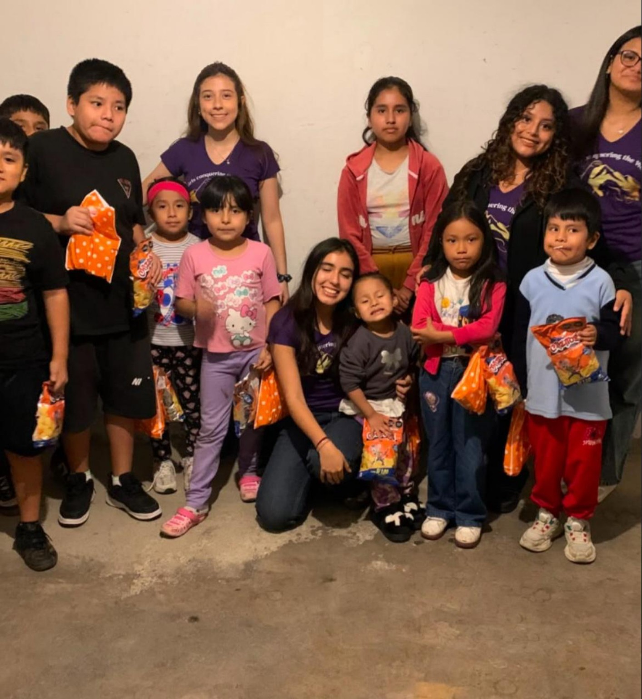
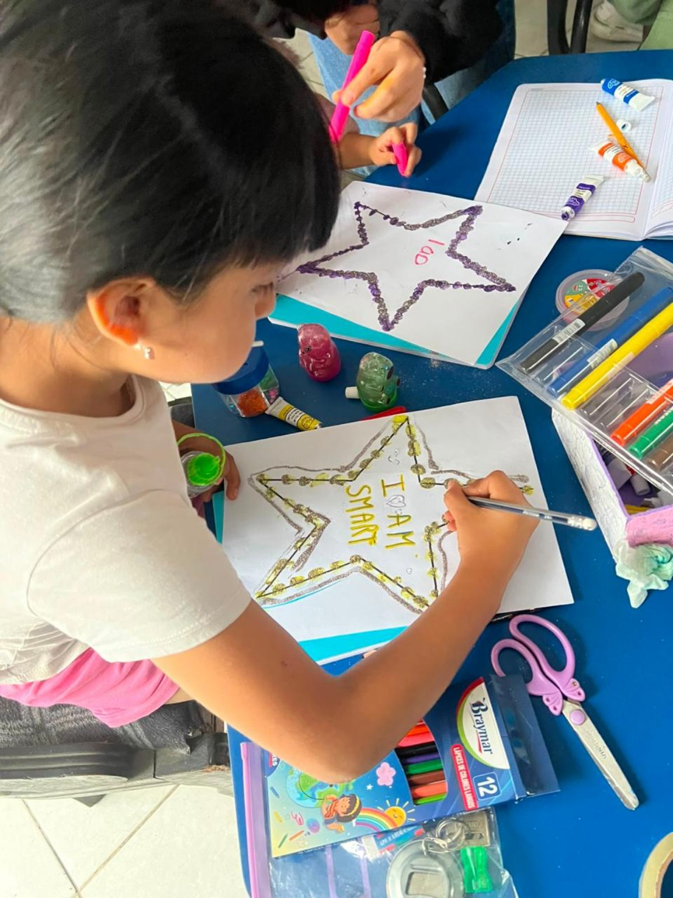
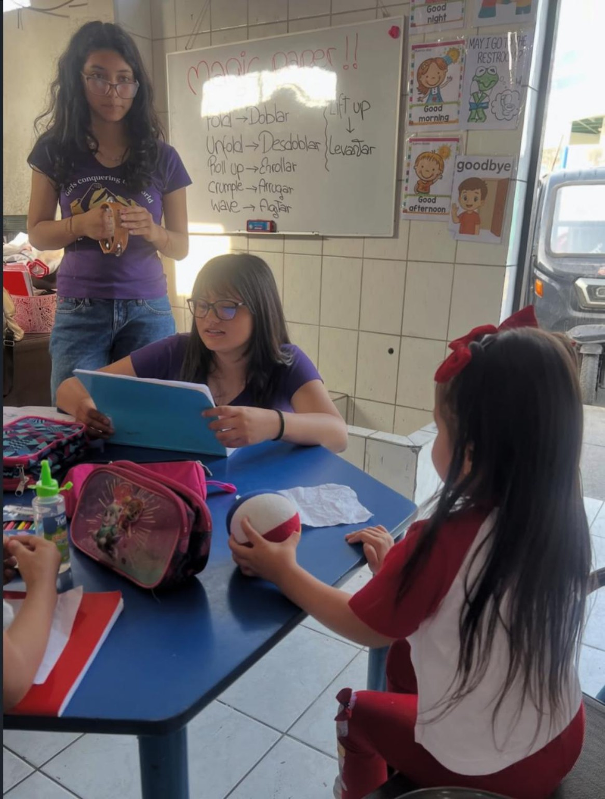
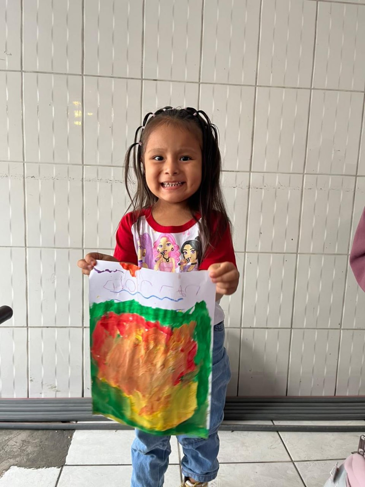
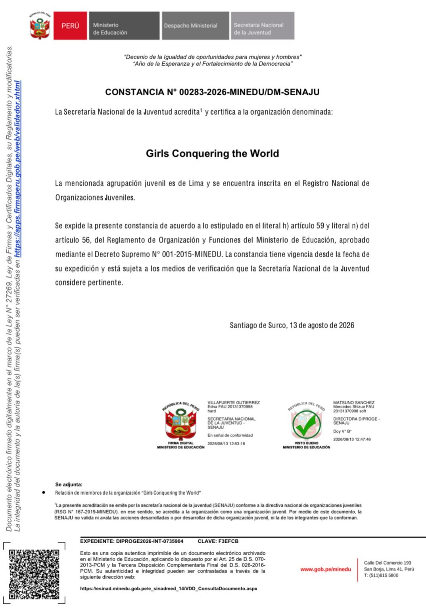
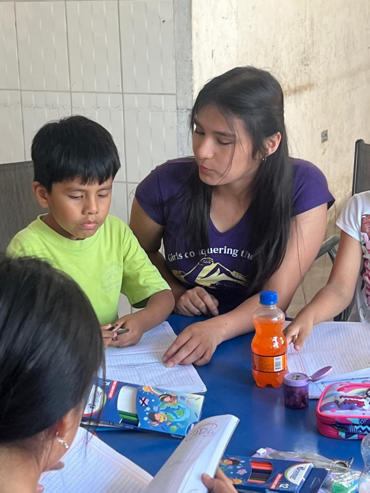

UNA COMUNIDAD QUE TRANSFORMA
Juntas creamos
oportunidades.
Impulsamos la educación, el acompañamiento y el desarrollo de niñas y mujeres a través de acciones que generan cambios reales en nuestra comunidad.
✳Educación · Comunidad · Oportunidades

✦
El futuro se construyecon oportunidades para todas
GIRLS
CAN
✳
CAN
✳
01Pequeñas acciones,
grandes cambios.
grandes cambios.
EDUCACIÓN CON PROPÓSITO ✳COMUNIDAD ✳IGUALDAD DE OPORTUNIDADES ✳EDUCACIÓN CON PROPÓSITO ✳
01 / CONÓCENOS
Hola, somos
Girls Conquering the World.
Te invitamos a conocernos.
¿Qué somos?
Somos una comunidad de jóvenes que cree que ninguna niña debería tener que renunciar a sus sueños por falta de oportunidades. Nos une la convicción de que aprender, acompañarnos y abrir espacios seguros puede transformar vidas. Crecemos juntas, escuchamos cada historia y convertimos nuestras ideas en acciones que dejan huella.
¿Qué buscamos?
Buscamos que cada niña y mujer descubra todo lo que es capaz de lograr. Queremos acercar la educación, el inglés y el conocimiento de nuestros derechos a quienes más lo necesitan; crear redes de apoyo donde nadie se sienta sola y demostrar que un futuro más justo se construye cuando nos damos la mano. Porque cuando una de nosotras avanza, avanzamos todas.
HISTORIA DE GIRLS CONQUERING THE WORLD ↗✳
¿Cuáles son nuestros ODS?
Nuestra ONG cuenta con 3 Objetivos de Desarrollo Sostenible:
02 / NUESTRAS ACTIVIDADES
Aprendemos,
crecemos juntas.
Compartimos momentos de aprendizaje, creatividad y acompañamiento junto a niñas y niños de nuestra comunidad.




03 / RESPALDO INSTITUCIONAL
Una organización
acreditada.
Girls Conquering the World cuenta con constancia de acreditación de la Secretaría Nacional de la Juventud (SENAJU), que certifica su inscripción en el Registro Nacional de Organizaciones Juveniles.
Ver constancia completa ↗ Descargar constancia (PDF) ↓
CONSTANCIA SENAJU · 13 DE AGOSTO DE 202604 / LO QUE HACEMOS
Acciones que abren
nuevos caminos.
Cada proyecto nace de una necesidad real y crece gracias al trabajo colaborativo con las comunidades.

05 / DÓNDE ESTAMOS
Cerca de cada
comunidad.
Estamos organizando nuestro trabajo por distritos para acercar actividades y alianzas a más personas. Selecciona un distrito para conocer su estado.
DisponiblePróximamenteNo disponible
Selecciona un distrito en el mapaVerás las líneas de trabajo previstas.
LIMA · PERÚ ✳
06 / TRABAJO EN RED
La comunidad es
parte de la solución.
Buscamos colaborar con instituciones educativas, espacios de apoyo a mujeres y centros de atención para personas mayores.
01Instituciones educativas públicasActividades y refuerzo educativo
02Espacios de protección para mujeresAcompañamiento y apoyo comunitario
03Centros para personas mayoresEncuentros y actividades compartidas
Por seguridad, no publicamos direcciones de espacios de protección. La información de instituciones aliadas se comparte únicamente con autorización.
✳
07 / SÚMATE AL EQUIPO
Tu tiempo puede
crear un cambio.
Buscamos personas comprometidas, con ganas de aprender, compartir conocimientos y trabajar por una comunidad con más oportunidades.
✦ Convocatoria para voluntarias desde los 15 años
A1
→
C2
→
C2
YOUR
VOICE
MATTERS ✳
VOICE
MATTERS ✳
08 / ENGLISH OPPORTUNITIES
El inglés también
abre puertas.
Queremos acercar herramientas para aprender inglés y reconocer el nivel de cada participante. Puedes realizar una evaluación orientativa y conocer tu punto de partida.
A1A2B1B2C1C2
Evaluación orientativa; no equivale a una certificación oficial.
ENGLISH CHECK-IN
Pregunta 1 de 6
09 / CONFIANZA Y COMPROMISO
La confianza se
construye con claridad.
Creemos que cada aporte debe gestionarse con responsabilidad. Aquí compartiremos avances, actividades, alianzas y reportes cuando estén disponibles.
Reportes de actividades
Resumen de acciones realizadas y próximos pasos.
En actualizaciónUso de aportes
Publicaremos el destino de los recursos y los comprobantes correspondientes.
En actualizaciónAlianzas y acreditaciones
La documentación institucional se incorporará cuando corresponda.
En actualización✳
Quiero colaborar ↗¿Quieres apoyar esta iniciativa?Escríbenos para conocer las formas de colaboración disponibles.
10 / HABLEMOS
Las grandes ideas
empiezan conectando.
¿Quieres participar, proponer una alianza o saber más sobre nuestros proyectos? Nos encantará leerte.
valentina2204mendoza4022@gmail.com ↗romina.coello909@gmail.com ↗redpoint.2.version.x@gmail.com ↗@girlsconqueringtheword_ ↗
COORDINACIÓNRomina Ramirez · Valentina Mendoza · Doriane Mori